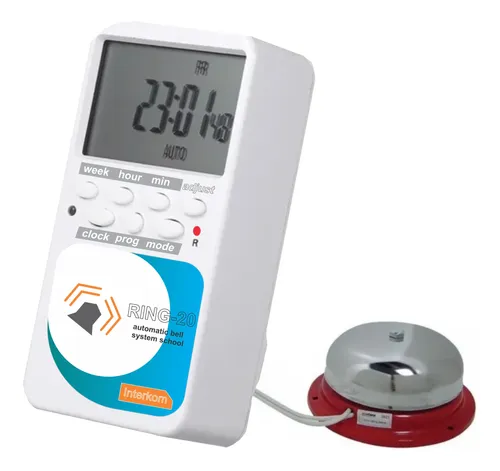
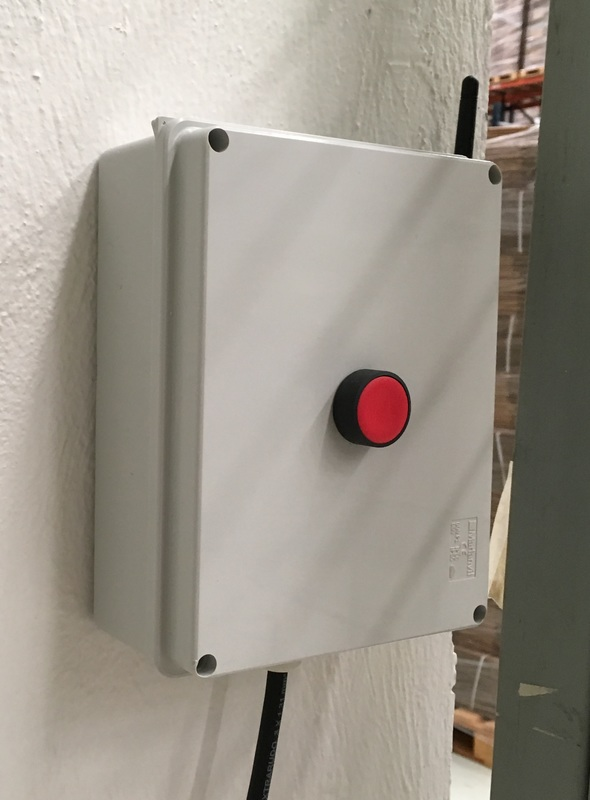
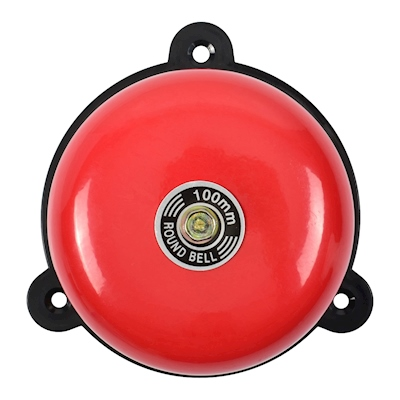
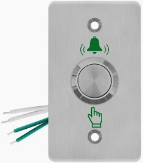

Modelo Básico



Ideal para escuelas pequeñas que buscan automatizar los horarios de entrada, salida y recreo mediante un timbre digital sencillo y eficiente.
Modelo Empresarial


Diseñado para instituciones educativas con mayores necesidades de control. Incluye funciones avanzadas para la gestión de horarios y monitoreo del sistema.